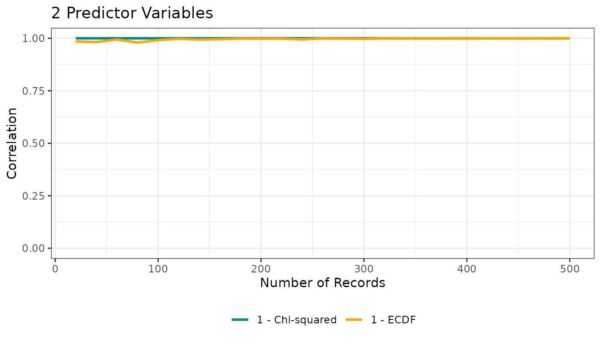
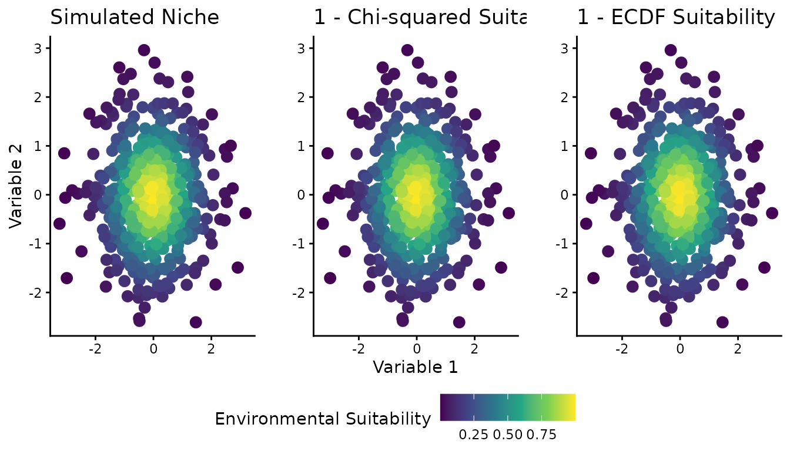
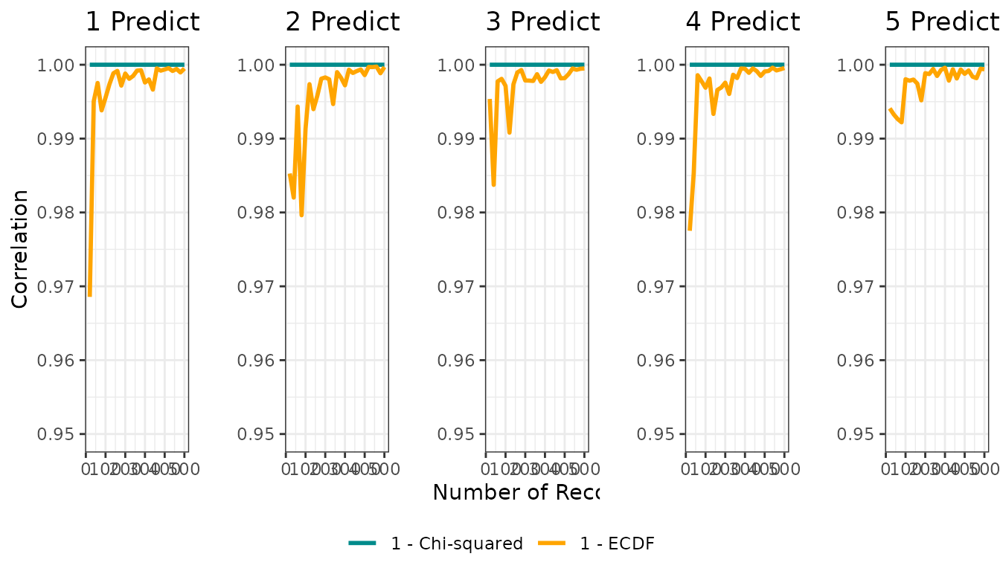
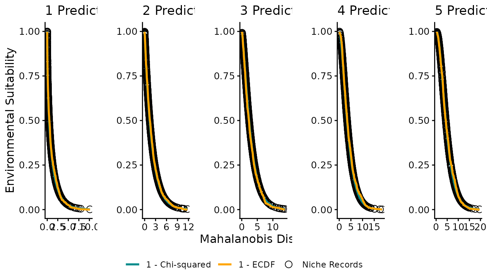
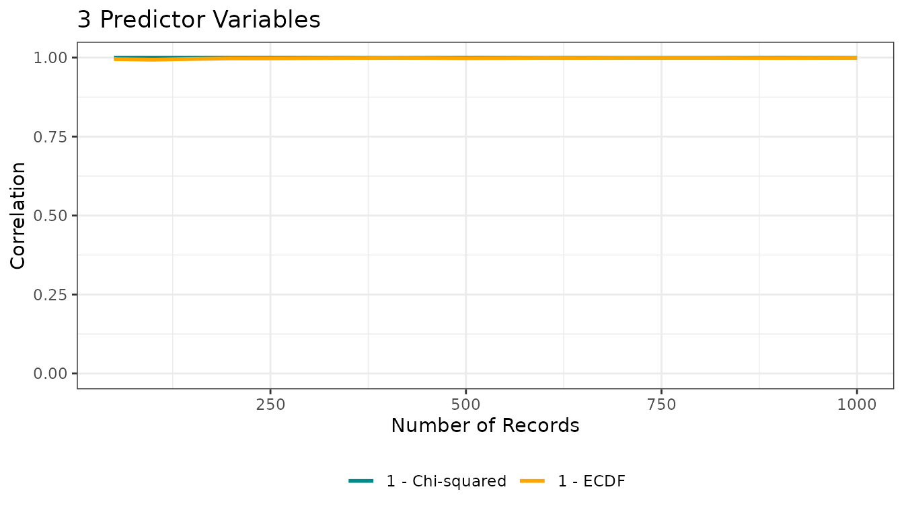

ECDF and Mahalanobis Distance for Theoretical Niche Modeling
Luíz Fernando Esser
ecdfniche.RmdIntroduction
This vignette shows how to use the ECDFniche package
to reproduce the simulations from the original
ECDF_MahalDist.R script, comparing Mahalanobis
distance-based suitability transformations using the chi-squared
distribution and the empirical cumulative distribution function
(ECDF).
Core simulation: ecdf_theoretical_niche()
The function ecdf_theoretical_niche() simulates a
multivariate normal “environmental space”, computes Mahalanobis
distances for a sample of points, and then maps those distances to
suitability using:
- (theoretical chi-squared transformation)
- (empirical transformation)
set.seed(3)
res1 <- ecdf_theoretical_niche(n = 2)
res1$corplot
The returned list contains:
-
corplot: correlation vs sample size between the “true” niche and both suitability transformations -
sample_data: matrix with the last sample of environmental predictors -
sample_niche,chisq_suits,ecdf_suits: suitability values -
mahal_dists: Mahalanobis distances for the last sample
You can directly plot the correlation object:
res1$corplot
Reproducing the full analysis
The convenience function run_ecdf_mahal_analysis() wraps
the original workflow: it runs ecdf_theoretical_niche() for
several dimensions (by default 1 to 5) and produces three figures
analogous to those in the script.
set.seed(3)
full_res <- run_ecdf_mahal_analysis(dims = 1:5)


Figure 1: Spatial visualization (2D)
Figure 1 shows the 2D environmental space (two predictor variables) with color representing different suitability definitions: the simulated “true” niche, the chi-squared-based suitability, and the ECDF-based suitability.
full_res$figure1 |> plot()
Figure 2: Correlation vs sample size
Figure 2 presents, for each dimensionality, how the correlation between the true niche and each distance-to-suitability transformation changes with sample size.
full_res$figure2 |> plot()
Figure 3: Distance–suitability relationships
Figure 3 plots Mahalanobis distance on the x-axis and suitability on the y-axis, showing how niche records, chi-squared suitability, and ECDF suitability relate across different numbers of predictor variables.
full_res$figure3 |> plot()
Customizing simulations
You can customize key aspects of the simulation by passing arguments
to ecdf_theoretical_niche():
res_custom <- ecdf_theoretical_niche(
n = 3,
n_population = 20000,
sample_sizes = seq(50, 1000, 50),
seed = 123
)
res_custom$corplot
These arguments control the dimensionality, the size of the environmental “background”, and the grid of sample sizes used to compute correlations.